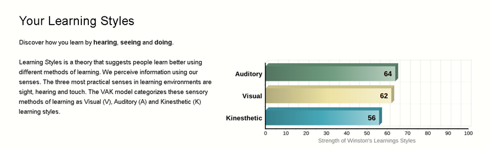
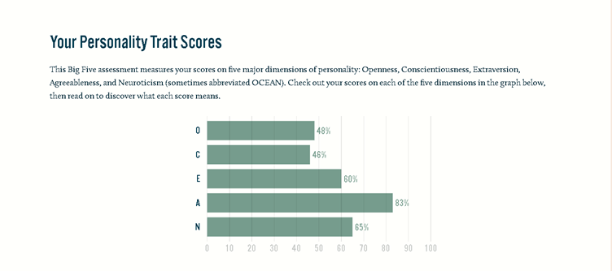

Interest in IT
IT has been a big part of my life. Not only me but is has helped the whole world to make life easier. I love how technology just keeps on advancing each day, providing solutions and help make life easier with a single innovation. That’s what sparked my interest in IT. As a kid, my parents would just provide me with smartphones but never care to explain how great it is. All of it is the work of IT. I would love to create new innovations and help advance technology to help myself, my family and the world.
RMIT has been a university of my choice for a good while. Ever since the start of high school, Universities located in Melbourne has caught my eye. The city itself looks cosy and has a lot of people from Indonesia. I knew Melbourne was the right choice. There’s also a different vibe given off by RMIT. In addition, RMIT is strategically the best school for me as it is located near the apartment I’m going to rent.
I expect to learn how to use IT, connect IT to the world and help it grow. All the basics of programming, all the IT terms, the pros and cons of IT and how IT can help the world.
Ideal Job
The ideal job for me would be the IT manager position at a company name Assurant. This job requires a broad experience in the IT to join the team and lead the IT function. In this job, people who apply will be expected to project-manage and deliver IT infrastructure, systems, applications, and other technology-based solutions that improve and evolve capabilities and support the delivery of day-to-day business operations.
It also offers hybrid role working so you can work remotely or in the office. This gives the job more flexibility which is something I’m looking for. Moreover, the attractive salary ensures of my attraction towards the job. The job offer also says that you need to be expert with a lot of different skills. This attracts me as when I’m experienced enough to the point that I got accepted in this job, that means I’m successful enough.
Some of the required skills are:Requires knowledge and expertise with integration and reporting solutions such as SSIS and SSRS are preferred. Understanding of API technologies, foundations, and best practices. Knowledge of development concepts for Windows and web services. Established programming skills in targeted languages and utilities for the distributed environments and relational database technologies. Entering RMIT as a first year, skill that I own including basics to Python, HTML, CSS and Kturtle. The skill that I own right are beginners. However, I hope that entering RMIT with Bachelor or IT can help introduce and broaden my skills and get experience to bring into the real world. Other than just RMIT, I can self-study or join on various courses to help me learn more skills that can fit this job.
Entering RMIT as a first year, skill that I own including basics to Python, HTML, CSS and Kturtle. The skill that I own right are beginners.
However, I hope that entering RMIT with Bachelor or IT can help introduce and broaden my skills and get experience to bring into the real world. Other than just RMIT, I can self-study or join on various courses to help me learn more skills that can fit this job.
Personality
 After a quick observation, my character seems to be flexible. I can both be introverted and extroverted but leans towards the introverted side. I don’t handle large groups well but can engage and be open in small groups. Based on feelings, I can be spontaneous and structured based on logic. The type of person that can fit in well and is balanced overall. Open to receiving inputs from others and can give responses accordingly. The tests also concludes that I don’t seem to have a specific way of learning, but the least used learning style is the kinesthetic learning style.
In a team, it would take a while for me to be comfortable. Although, fitting in and socializing is not a problem for me. I’m also a good listener so I can easily get into work with the team. I also have high amount of agreeableness which makes connecting and maintaining solidarity of the team uncomplicated.
Forming a team is best when it has the right amount of people. Usually, 4 or 5 people at max. People that can be open and engaging will really work well with getting me more comfortable. Other than that, I think I’m adaptive enough to fit into all kinds of team.
Project Idea
OverviewMy project idea will be an application that can helps you connect each member of the household. The application is named 2EZComms. It can be accessed through your laptop, smartphone, or tablets. It can be used as a shortcut to communicate with someone in your house without meeting. It can be used to call, message, give orders, request, and you can add extra features in the app itself. You can customize the layout of the icons inside the app, from frequently used to the ones you don’t use. Instead of having to text, “can someone help order food online?”, just click on one button with the food icon and it will notify the other family members.
MotivationMy motive for this app is a bit selfish. Sometimes, in my own household, sometimes it’s still hard to communicate with each other even through messenger apps. Sometimes calling each other might and explaining might bother me. With this app, all you need is a single button to give commands or receive commands from each other.
DescriptionFirstly, you’ll need to join a room in which contains the members of a community, e.g Family, Workplace etc. You can join a room by a unique code given after the creation of the room. This room can be created by any users. Each user would need to request to join a room and can be accepted by the room owner. Other than the “owner” title, you can customize and add even more titles. Once accepted, you’ll be part of a room. There will be 2 tabs in which one is to show notifications for all members and the other tab will be for private communications. You can then add icons or shortcuts to certain commands. You can change the icons and personally name them. Organize them to be in the order you like. There is also status feature where you can show your status (busy, available, invisible, away). This helps other members to understand your current situation. You can also display emojis on your profile to express your current feelings and situation. There’s also a member organizing feature where you can kick, move, ban, and promote members. Everything is easy to use and user friendly as you can drag and drop with your fingers if you’re using smartphone. The app is fully customizable to your own liking. To add icons for your commands, press the ‘+’ button on the top left of the application. You can change the icon, give it a name, specified receivers, or schedule them. To delete the icons, drag and drop your icons on the trash on the top left of the application. Other than just the icons, you can set the application’s theme and colour to your liking. The app also gives you access to create your own ringtones and set them for different members in the room. This helps you identify who sent you a command, whether the person has done the command or to notify you that the person is unable to finish the command. There is also an overlay feature where you can display some icons that you’ve made on the side of your screen while using another app. Again, the overlay is completely customizable
Tools and technologiesFor this project idea, it might require an App inventor. Whether it is the RMIT app inventor or other apps. Since it’s a simple application, I don’t think you need anything else for the project and just need to design the app.
OutcomeIf this project is successful, people within a community might be able to communicate with each other better. Sometimes, even inside a household, you might be busy and is unable to waste much time trying to communicate. This app will be helpful for me as I do a lot of gaming. Sometimes calling can disrupt my gaming experience but the overlay feature can help with that problem. I can notify my family members what I’m up to and what I want. I hope that it can help other people which has similar problems as me.